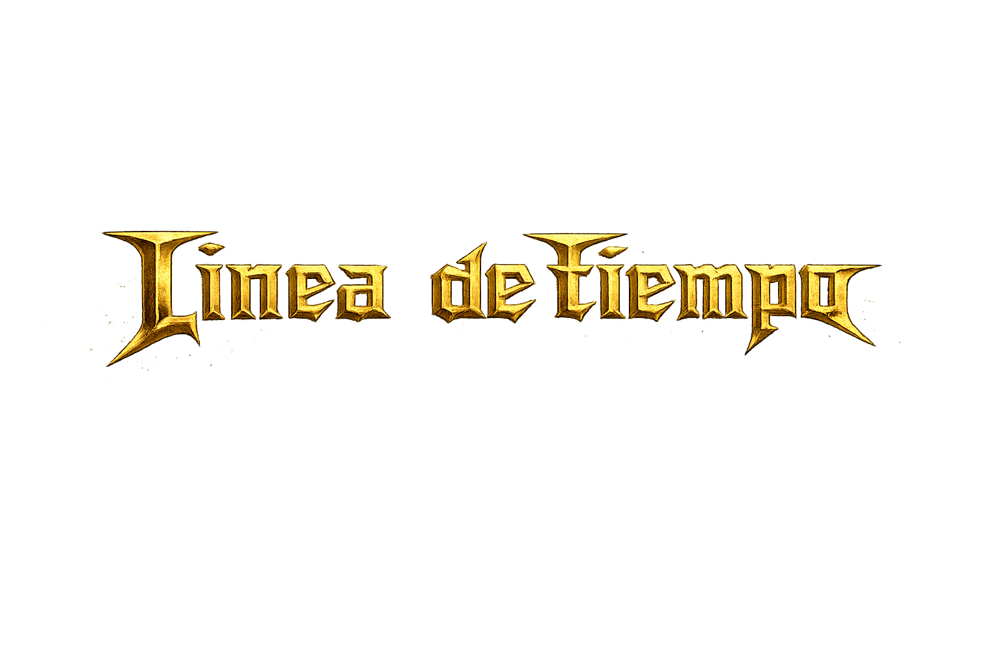

Inicio de la banda
Dave Mustaine es despedido de Metallica por problemas con el alcohol.

Dave Mustaine es despedido de Metallica por problemas con el alcohol.
Dave Mustaine conoce al bajista David Ellefson en Hollywood, California, y forma Megadeth con el guitarrista Greg Handevidt y el baterista Dijon Carruthers.
 1984
1984
Megadeth dio su primer concierto en Ruthie's Inn, Berkeley, California, el 17 de febrero de 1984. Kerry King tocó los primeros cinco conciertos como segundo guitarrista antes de regresar a Slayer
Chris Poland es contratado como nuevo guitarrista. Megadeth da sus primeros conciertos en Nueva York con Slaye.
 1985 Junio
1985 Junio
Megadeth lanza Killing Is My Business... And Business Is Good! el 12 de junio de 1985 a través de Combat Records.
 1986
1986
Primera sesión fotográfica profesional de Megadeth para nuevas fotos promocionales tras firmar con Capitol Records. Foto tomada en Hollywood Hills, California.
 1986 Septiembre
1986 Septiembre
Peace Sells... But Who's Buying? se publica el 19 de septiembre a través de Capitol Records.
Primera gira de Megadeth por Reino Unido, Europa y Japón. Comienza el 6 de marzo en el Hammersmith Odeon de Londres, Reino Unido, y finaliza el 6 de abril en el Koseinenkin Big Hall de Osaka, Japón.
 1988 Enero
1988 Enero
El tercer álbum de estudio de Megadeth, So Far, So Good... So What!, se lanzó el 19 de enero de 1988 a través de Capitol Records. El álbum alcanzó el puesto número 28 en las listas de Billboard de Estados Unidos y obtuvo la certificación de Platino en 1998.
Nick Menza es contratado como el nuevo baterista de Megadeth, en sustitución de Chuck Behler.
 1990 Febrero
1990 Febrero
Marty Friedman es contratado como guitarrista principal de Megadeth, en sustitución de Jeff Young.
 1990 Octubre
1990 Octubre
El cuarto álbum de estudio de Megadeth, Rust in Peace, se lanzó el 24 de septiembre de 1990 a través de Capitol Records. El álbum es muy apreciado en la comunidad del metal como uno de los mejores álbumes de thrash metal de todos los tiempos.
 1992 Julio
1992 Julio
El quinto álbum de estudio de Megadeth, Countdown to Extinction, se lanza el 14 de septiembre. El álbum alcanzó el puesto número 2 en las listas de Billboard de Estados Unidos, obtuvo la certificación de doble platino en 1992 y fue nominado a un premio Grammy en la categoría de Mejor Interpretación de Metal en 1993.
 1994 Noviembre
1994 Noviembre
Youthanasia es el sexto álbum de estudio de la banda estadounidense de heavy metal Megadeth, lanzado el 1 de noviembre de 1994 a través de Capitol Records.
 1995 Julio
1995 Julio
Megadeth lanza el recopilatorio Hidden Treasures en Estados Unidos y Japón el 18 de julio de 1995, a través de Capitol Records. El álbum incluye canciones que aparecieron originalmente en bandas sonoras de películas y álbumes tributo.
 1997 Junio
1997 Junio
Megadeth lanza Cryptic Writings. Las primeras 500.000 copias en Estados Unidos se publicaron con una portada de fondo plateado
 1999 Junio
1999 Junio
Megadeth pasa el verano tocando en festivales, incluido Woodstock '99.
 1999 Agosto
1999 Agosto
Risk, el octavo álbum de estudio de Megadeth, se publicó el 31 de agosto de 1999, siendo el último álbum de la banda lanzado con Capitol Records.
 2001 Mayo
2001 Mayo
El noveno álbum de estudio de Megadeth, The World Needs a Hero, fue lanzado el 15 de mayo de 2001 por Sanctuary Records. El álbum marcó un bienvenido regreso a las raíces más heavy metal de Megadeth.
 2002 Febrero
2002 Febrero
Killing Is My Business... And Business Is Good! fue completamente remezclado y remasterizado, con varias canciones adicionales, y lanzado el 5 de febrero de 2002.
 2004 Septiembre
2004 Septiembre
The System Has Failed es el décimo álbum de estudio de Megadeth, lanzado el 14 de septiembre de 2004.
 2005 Octubre
2005 Octubre
Dave Mustaine anunció en un concierto en Buenos Aires, Argentina. El concierto fue filmado para un próximo álbum/DVD en vivo.
 2006 Marzo
2006 Marzo
James LoMenzo sustituye a James MacDonough en el bajo.
 2007 Mayo
2007 Mayo
Se lanza el undécimo álbum de estudio de Megadeth, United Abominations, se publica y debuta en el puesto número 8 de las listas de éxitos de Estados Unidos.
 2009 Septiembre
2009 Septiembre
El duodécimo álbum de estudio de Megadeth, Endgame, se publica y debuta en el puesto número 9 de la lista Billboard.
El bajista original, David Ellefson, regresa a Megadeth, reemplazando a James LoMenzo.
 2013 Junio
2013 Junio
Se publica Super Collider, el decimocuarto álbum de estudio de Megadeth, que debuta en el puesto número 6 de la lista Billboard.
 2016 Enero
2016 Enero
Se publica Dystopia, el decimoquinto álbum de estudio de Megadeth, que debuta en el número 1 de las listas de Hard Music y Rock de Billboard, en el número 2 de la lista Top Album Sales y en el número 3 de la lista Top 200.
 2022 Septiembre
2022 Septiembre
Se publica el decimosexto álbum de estudio de Megadeth, titulado The Sick, The Dying... And The Dead!
 2026 Enero
2026 Enero
Megadeth lanzo su decimoséptimo y último álbum de estudio, titulado Megadeth, el 23 de enero de 2026, a través del sello Tradecraft de Dave Mustaine en colaboración con BLKIIBLK Records.